There are two main ways to customize styling produced by thematic: (1) specify the global settings in thematic_on() and/or (2) modify defaults on the local (i.e., plot) level.
Global customization
There are six main components to a thematic theme: a background color (bg), a foreground color (fg), an accent color, a font specification, a sequential color palette, and a qualitative color palette. Any of these components can be controlled through arguments to thematic_on(). Here’s a high level summary of the values they understand:
-
'auto'(except forqualitative, which always defaults tookabe_ito()). - R or CSS color codes (except for
font, which wants afont_spec()object). -
NA(except forbgandfg), which tells thematic avoid setting new defaults. -
sequentialalso understandssequential_gradient(), which controls parameters for constructing a gradient frombg,accent,fg(more generally,sequentialcan be a function withbg,accent, andfgarguments that returns a vector of color codes).
To demonstrate how to take advantage of this behavior, consider the following plot:
library(ggplot2) library(patchwork) smooth <- ggplot(mtcars, aes(wt, mpg)) + geom_point() + geom_smooth() contour <- ggplot(faithfuld, aes(waiting, eruptions, z = density)) + geom_raster(aes(fill = density)) + geom_contour() smooth + contour
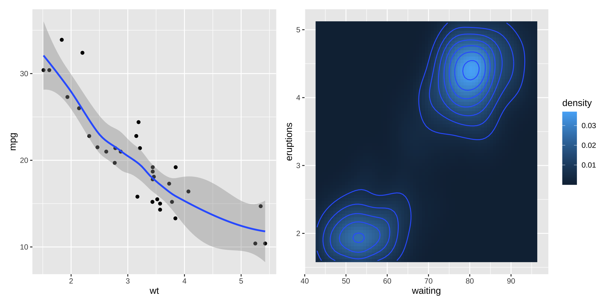
Now, we can achieve a “dark mode” without impacting accent (or, by consequence, sequential) by setting accent to NA
thematic_on(bg = "#222222", fg = "white", accent = NA) last_plot()
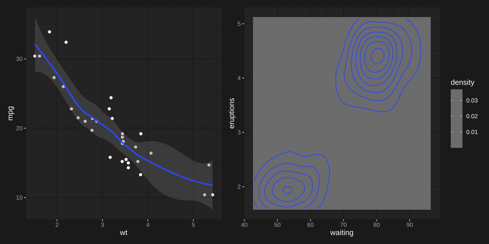
And to customize accent without impacting the sequential color scale default:
thematic_on(bg = "#222222", fg = "white", accent = "yellow", sequential = NA) last_plot()
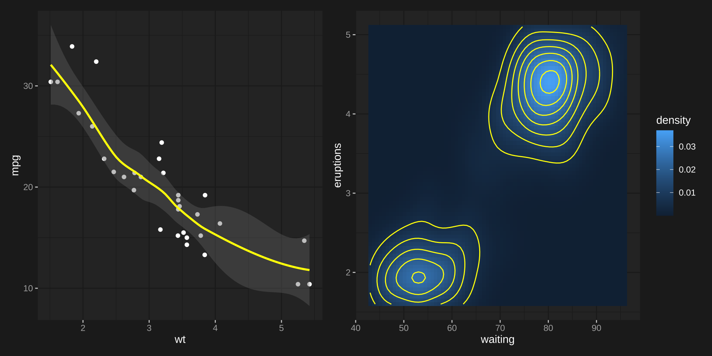
By default, sequential goes from a mixture of fg and accent to a mixture of bg and accent.
thematic_on(bg = "#222222", fg = "white", accent = "#6C71C4") last_plot()
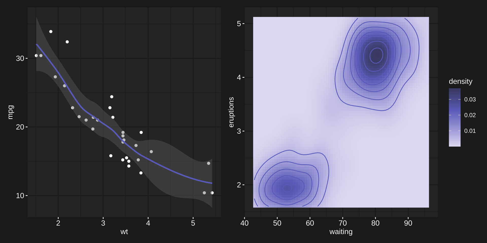
The amount of the mixture (i.e., weight) can be specified via sequential_gradient(). Here we increase the bg and decrease fg weight, effectively achieving an accent -> bg gradient:
thematic_on( bg = "#222222", fg = "white", accent = "#6C71C4", sequential = sequential_gradient(bg_weight = 1, fg_weight = 0) ) last_plot()
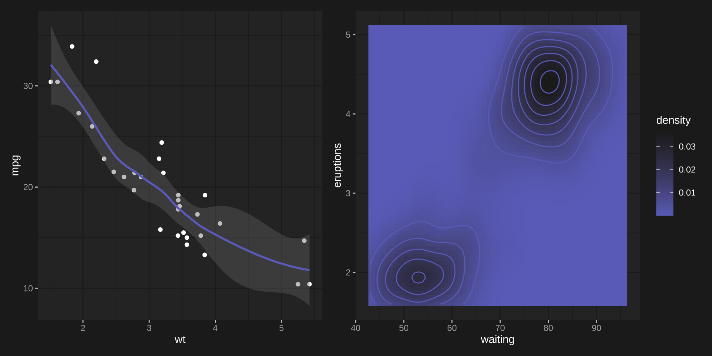
We can also flip the endpoints, which in this case gives us bg -> accent (instead of accent -> bg).
thematic_on( bg = "#222222", fg = "white", accent = "#6C71C4", sequential = sequential_gradient(bg_weight = 1, fg_weight = 0, fg_low = FALSE) ) last_plot()
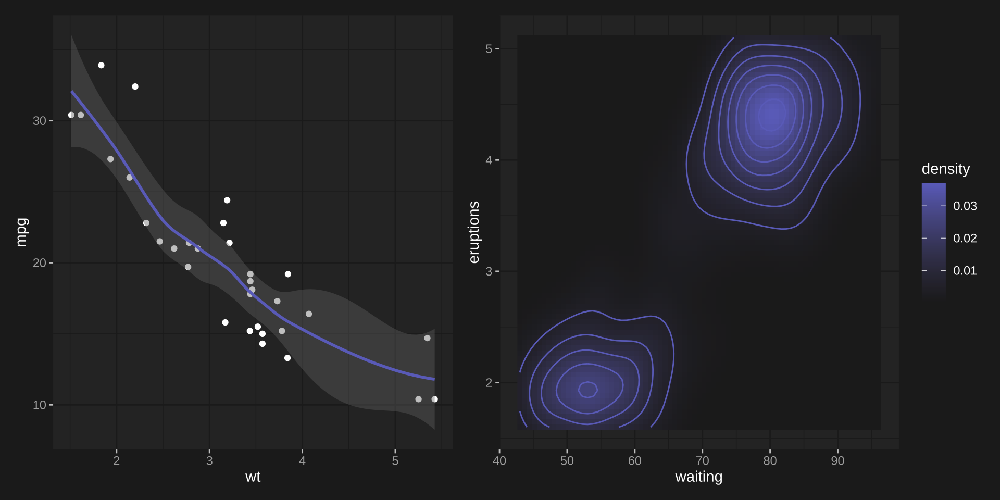
If that level of control doesn’t fit your use case, can also supply a vector of color codes (or a function of accent, fg, bg that returns color codes):
thematic_on( bg = "#222222", fg = "white", accent = "#6C71C4", sequential = terrain.colors(10) ) last_plot()
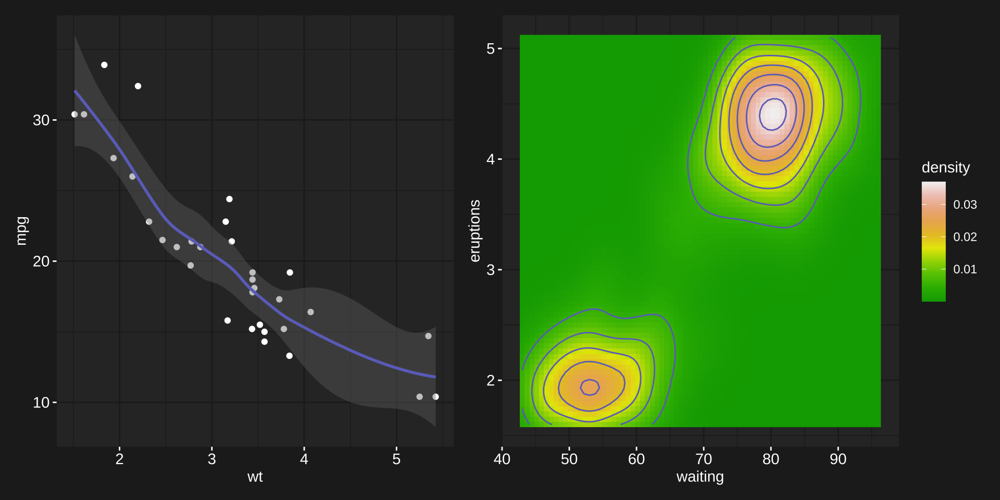
Similarly, qualitative accepts arbitrary vector of codes. In ggplot2, they are used so long as there are enough colors to encode the relevant number of levels (i.e., left plot). Otherwise, the default scale_[color/fill]_hue() is used instead (i.e., right plot).
thematic_on( bg = "#222222", fg = "white", qualitative = RColorBrewer::brewer.pal(8, "Dark2") ) dark2 <- ggplot(mtcars, aes(wt, mpg, color = factor(cyl))) + geom_point() hue <- ggplot(mtcars, aes(wt, mpg, color = row.names(mtcars))) + geom_point() dark2 + hue #> Warning: thematic was unable to resolve `accent='auto'`. Try providing an #> actual color (or `NA`) to the `accent` argument of `thematic_on()`. By the way, #> 'auto' is only officially supported in `shiny::renderPlot()`, some rmarkdown #> scenarios (specifically, `html_document()` with `theme!=NULL`), in RStudio, or #> if `auto_config_set()` is used.
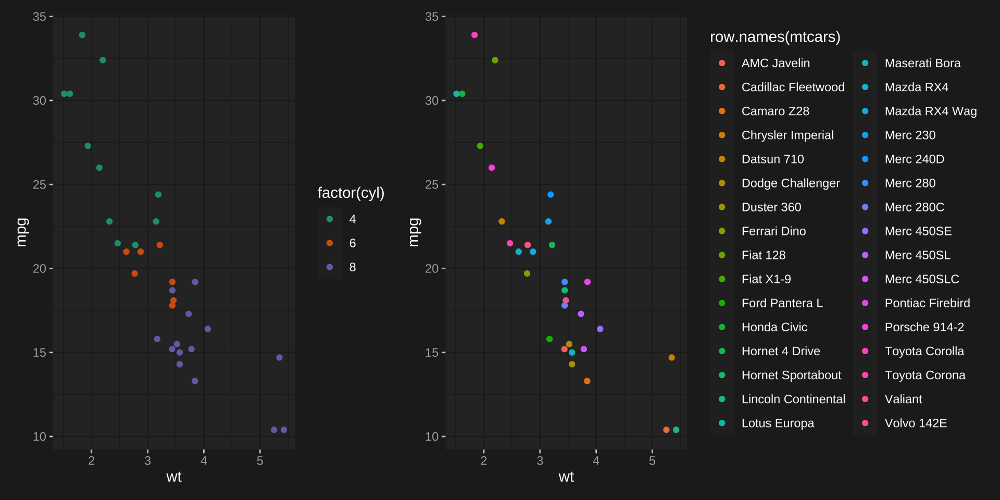
It’s worth noting that these examples intentionally use ggplot2 (instead of lattice or base) to demonstrate it’s relatively better handling of qualitative and sequential. As it turns out, ggplot2 is the only approach that allows sequential scales to be specified independently from a particular graph’s implementation, but as you’ll see in the base graphics section below, you can still use thematic_get_option("sequential") to route the sequential scale to base (or lattice) graphics. Moreover, when it comes to base graphics qualitative sets the palette(), which gets recycled when the number of levels to encode is greater than the length of the palette().
Also, note that thematic_on() modifies global defaults via ggplot2::theme_set(), lattice::trellis.par.set(), graphics::par(), and grDevices::palette(), which can always be modified further, or overwritten at the plot level.
Local customization
ggplot2 theme defaults
thematic_on() sets a new “complete” theme() default based on bg, fg, and font (based on a modified version of theme_gray()). Since this theme is “complete”, you probably don’t want to mix it with other complete themes (e.g., theme_bw()), but you can definitely override particular aspects with theme().
thematic_on(bg = "#222222", fg = "white") p <- ggplot(mtcars, aes(wt, mpg)) + geom_point() + facet_wrap(~cyl) p + theme(strip.background = element_rect(fill = "purple"))
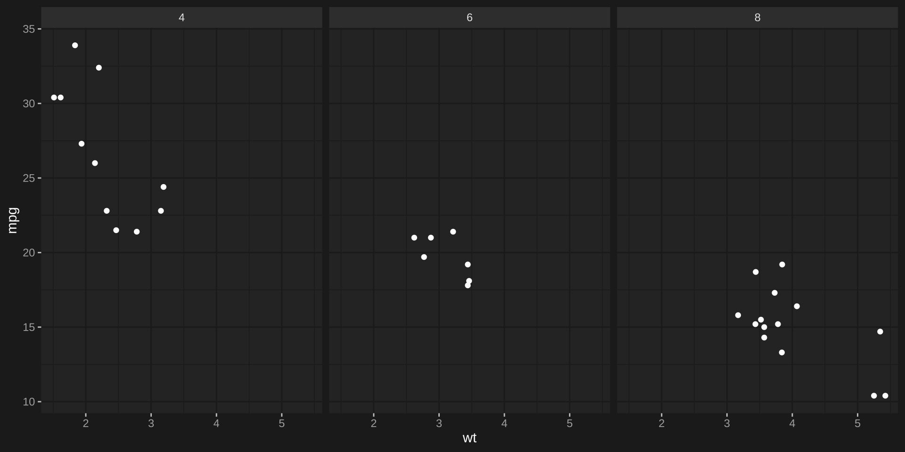
By the way, it’s worth noting that thematic uses a fairly arbitrary amount of mixture between the fg and bg to set the theme. If you wanted different mixture(s) of fg and bg, then thematic_get_mixture() is useful:
my_theme <- theme( panel.background = element_rect(fill = thematic_get_mixture(0.6)), strip.background = element_rect(fill = thematic_get_mixture(0.3)), strip.text = element_text(color = thematic_get_mixture(1)) ) p + my_theme
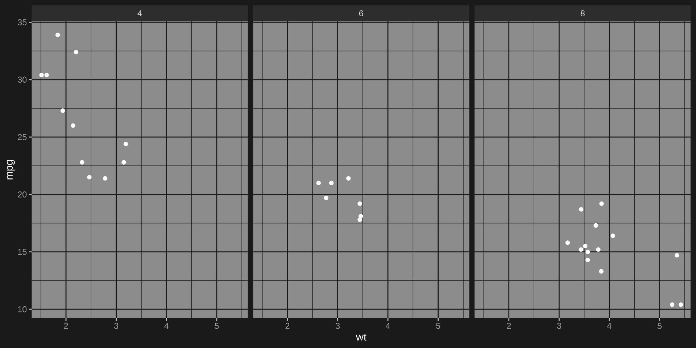
ggplot2 geom defaults
For each relevant Geom (e.g., GeomPoint), new Geom$default_aes defaults are set (based on bg, fg, accent, and font). Grayscale colors (e.g., GeomPoint$default_aes$color) are assigned a mixture of bg and fg whereas non-grayscale colors (e.g., GeomSmooth$default_aes$color) are assigned the accent color. It’s important to note these are just global defaults that only take effect if the aesthetic hasn’t been specified:
ggplot(mtcars, aes(wt, mpg)) + geom_point(color = "red") + facet_wrap(~cyl)
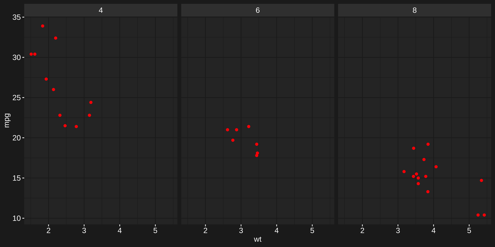
ggplot2 scale defaults
thematic_on() sets a new scale_fill_continuous() and scale_color_continuous() defaults (based on sequential). See the previous section for an extensive discussion on how sequential works and note that adding a relevant (continuous) scale renders sequential irrelevant:
ggplot(faithfuld, aes(waiting, eruptions, z = density)) + geom_raster(aes(fill = density)) + scale_fill_gradient2(midpoint = 0.02)
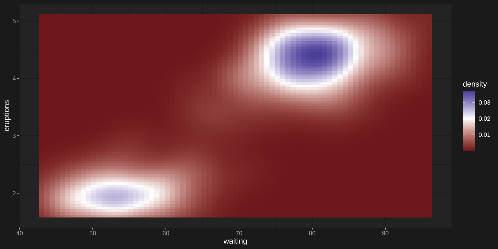
It also defines new scale_fill_discrete() and scale_color_discrete() defaults (based on qualitative). As with sequential colorscales, adding a relevant (discrete) scale renders qualitative irrelevant:
ggplot(economics_long) + geom_line(aes(date, value01, color = variable)) + scale_color_brewer(type = "qual")

As a side note, when it comes to 3rd party ggplot2 extension packages, thematic should work as expected (let us know if it doesn’t) as long as those extension packages aren’t hard coding defaults in un-expected ways.
library(GGally) ggpairs( iris, aes(color = Species), upper = list(continuous = wrap(ggally_cor, displayGrid = FALSE, alignPercent = 0.8)) ) #> Warning in (function (data, mapping, ..., stars = TRUE, method = "pearson", : #> `alignPercent` is deprecated. Please use `align_percent` if alignment still #> needs to be adjusted #> Warning in (function (data, mapping, ..., stars = TRUE, method = "pearson", : #> `displayGrid` is deprecated. Please use `display_grid` #> Warning in (function (data, mapping, ..., stars = TRUE, method = "pearson", : #> `alignPercent` is deprecated. Please use `align_percent` if alignment still #> needs to be adjusted #> Warning in (function (data, mapping, ..., stars = TRUE, method = "pearson", : #> `displayGrid` is deprecated. Please use `display_grid` #> Warning in (function (data, mapping, ..., stars = TRUE, method = "pearson", : #> `alignPercent` is deprecated. Please use `align_percent` if alignment still #> needs to be adjusted #> Warning in (function (data, mapping, ..., stars = TRUE, method = "pearson", : #> `displayGrid` is deprecated. Please use `display_grid` #> Warning in (function (data, mapping, ..., stars = TRUE, method = "pearson", : #> `alignPercent` is deprecated. Please use `align_percent` if alignment still #> needs to be adjusted #> Warning in (function (data, mapping, ..., stars = TRUE, method = "pearson", : #> `displayGrid` is deprecated. Please use `display_grid` #> Warning in (function (data, mapping, ..., stars = TRUE, method = "pearson", : #> `alignPercent` is deprecated. Please use `align_percent` if alignment still #> needs to be adjusted #> Warning in (function (data, mapping, ..., stars = TRUE, method = "pearson", : #> `displayGrid` is deprecated. Please use `display_grid` #> Warning in (function (data, mapping, ..., stars = TRUE, method = "pearson", : #> `alignPercent` is deprecated. Please use `align_percent` if alignment still #> needs to be adjusted #> Warning in (function (data, mapping, ..., stars = TRUE, method = "pearson", : #> `displayGrid` is deprecated. Please use `display_grid`
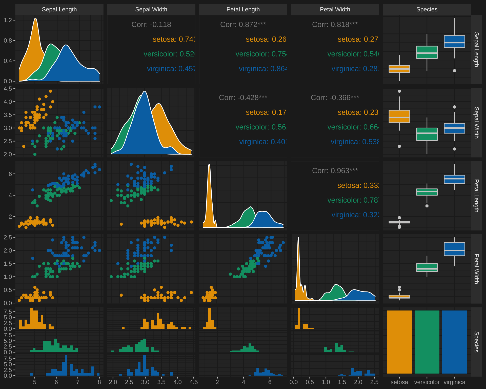
Lattice
thematic also works with lattice; however, beware that theming decisions are made so that lattice plots look somewhat similar to ggplot2 (i.e. panel background is a mixture of bg and fg instead of just bg). Also, similar to base graphics, lattice doesn’t have a global distinction between a qualitative and sequential colorscales, so sequential isn’t used in lattice. Instead, for consistency with lattice’s default, the “regions” colorscale interpolates between qualitative[1], bg, and qualitative[2].
(Btw, for lattice, accent may be of length 2. The first is used for ‘stroke’ and the second for ‘fill’).
# accent may be of length 2 (stroke and fill) thematic_on(bg = "#222222", fg = "white", accent = c("purple", "red")) library(lattice) show.settings()
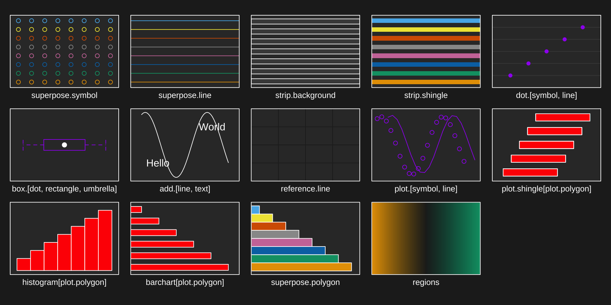
It might seem strange to have bg define the middle of the color gradient, but it’s intentional so that it works well with lattic::contourplot() (or other cases where text wants to be placed on top of the gradient):
library(stats) attach(environmental) ozo.m <- loess((ozone^(1/3)) ~ wind * temperature * radiation, parametric = c("radiation", "wind"), span = 1, degree = 2) w.marginal <- seq(min(wind), max(wind), length.out = 50) t.marginal <- seq(min(temperature), max(temperature), length.out = 50) r.marginal <- seq(min(radiation), max(radiation), length.out = 4) wtr.marginal <- list(wind = w.marginal, temperature = t.marginal, radiation = r.marginal) grid <- expand.grid(wtr.marginal) grid[, "fit"] <- c(predict(ozo.m, grid)) contourplot(fit ~ wind * temperature | radiation, data = grid, cuts = 10, region = TRUE, xlab = "Wind Speed (mph)", ylab = "Temperature (F)", main = "Cube Root Ozone (cube root ppb)") detach()
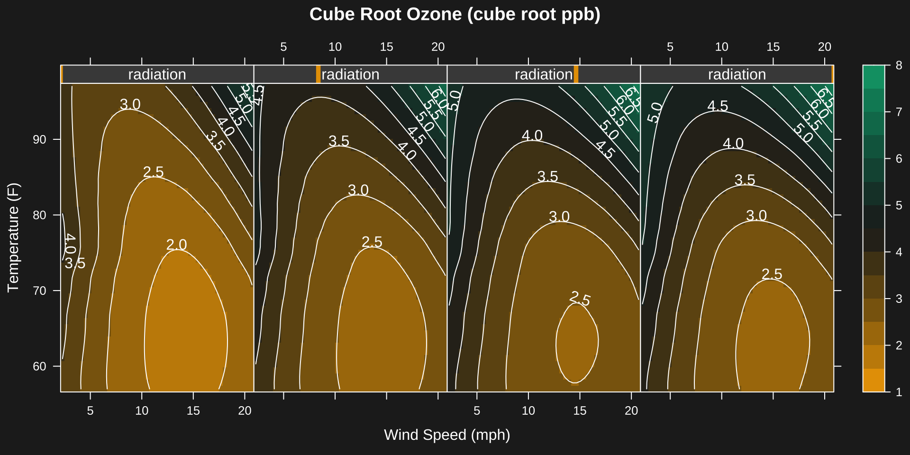
Base
Similar to lattice, base R graphics doesn’t have a global distinction between a qualitative and sequential colorscales, it just has palette() (which is closest, semantically, to qualitative):
par(mfrow = c(1, 2)) hist(rnorm(100)) plot(rep(1:5, each = 5), rep(1:5, 5), col = 1:25, pch = 1:25, cex = 5)
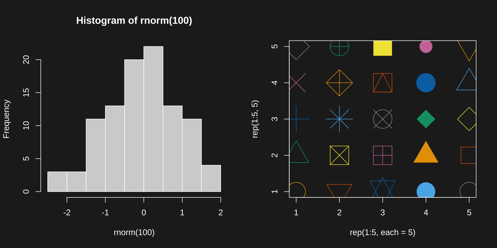
However, do know that you can supply the current sequential colorscale to individual plotting functions by doing something like col = thematic_get_option("sequential"):
par(mfrow = c(1, 2)) image(volcano) image(volcano, col = thematic_get_option("sequential"))
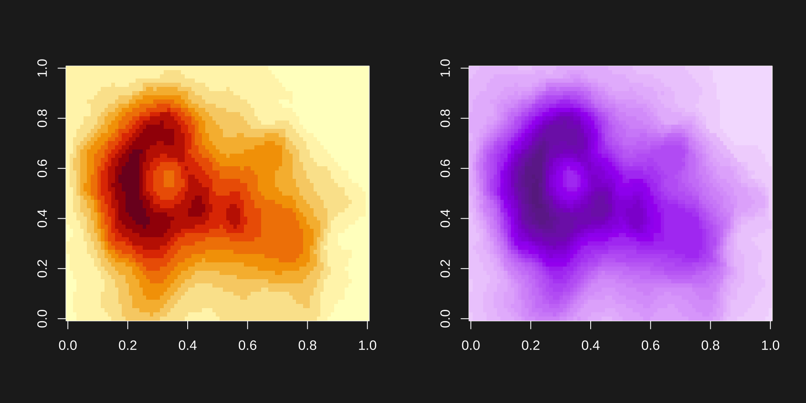